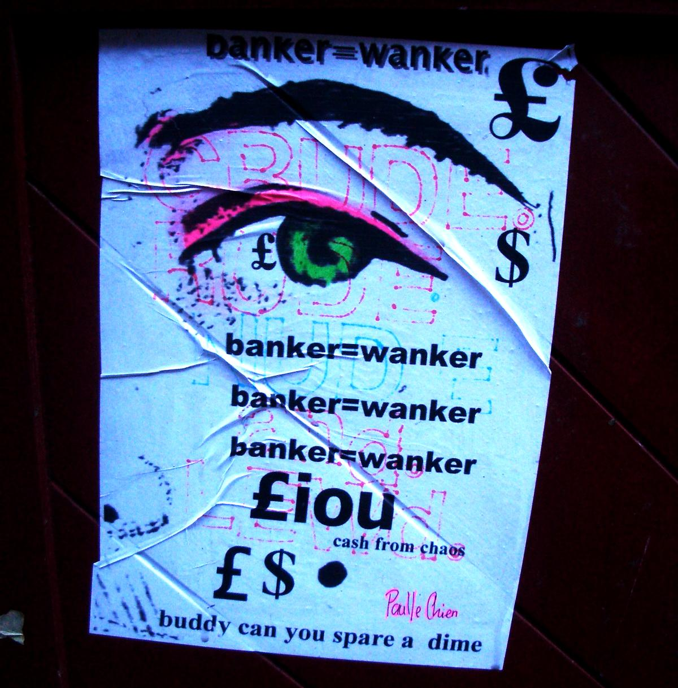

Decentralized transactions
Opentabs.net is a free software web app to help the 99% be less dependent on abusive banking fees.
Now in private alpha
We closed alpha registration after the 99th person signed up. These fine people will help us test drive the app before we open it up to a wider public later this year.

Why it's needed
Imagine you owe me money from something I bought for you. If it was a small amount, we can decide to forget about it (gift economy). But if it was a noteworthy sum, then we would probably end up using the Plain Old Banking System to settle this little peer-to-peer transaction.
People use banking between friends, between house mates, and even between family members, and abusive banking fees play too big a role in our day-to-day life. This has to stop. With Opentabs.net there will be a third option: just tab it!
How it works
The Opentabs.net web app does not make actual transactions. It is not a currency, and it is not a bank. It just helps you to cryptographically sign open tabs (»IOUs«) between peers, as an alternative to actually executing a bank transfer. This way we can both forget about what we owe each other, and strike it off against other transactions, until maybe at the end of the year we clear the balance once, and settle the tab. Just like tabs in a bar.